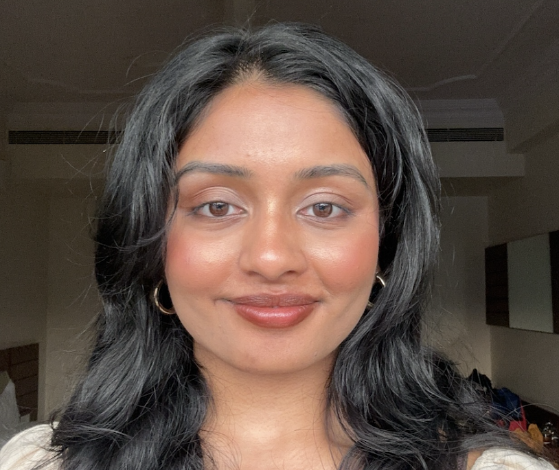
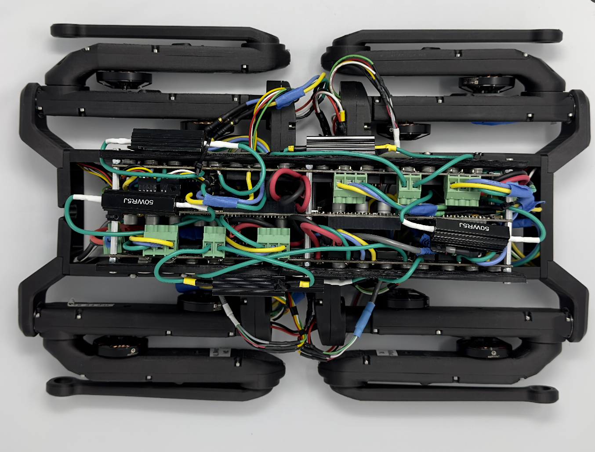
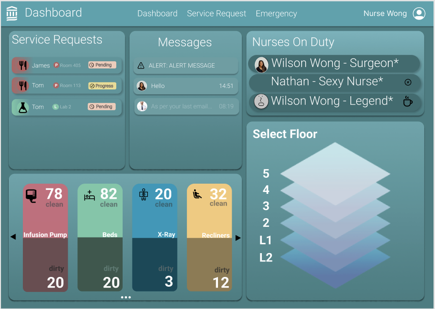
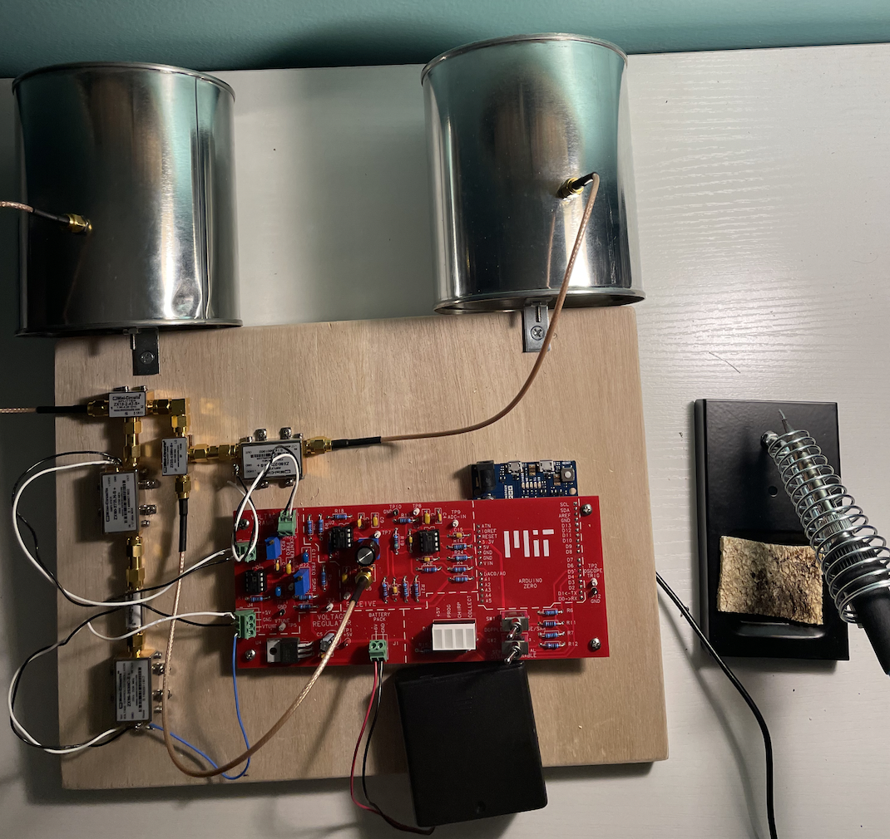
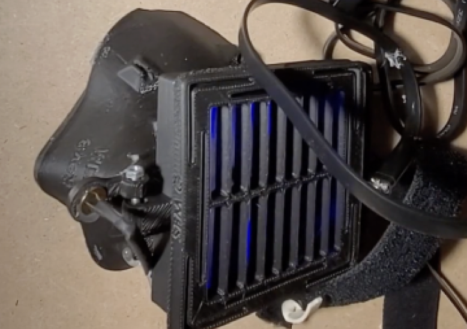
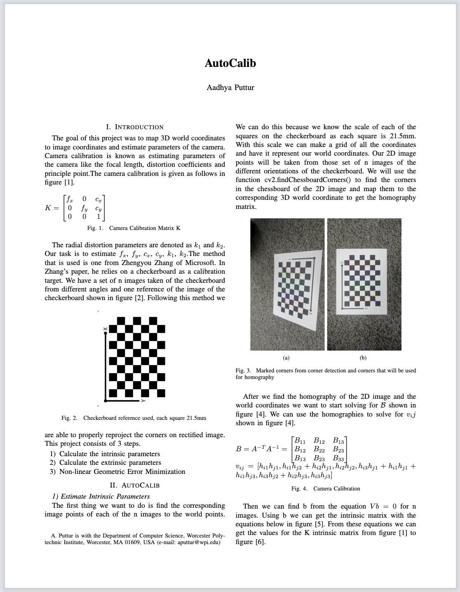
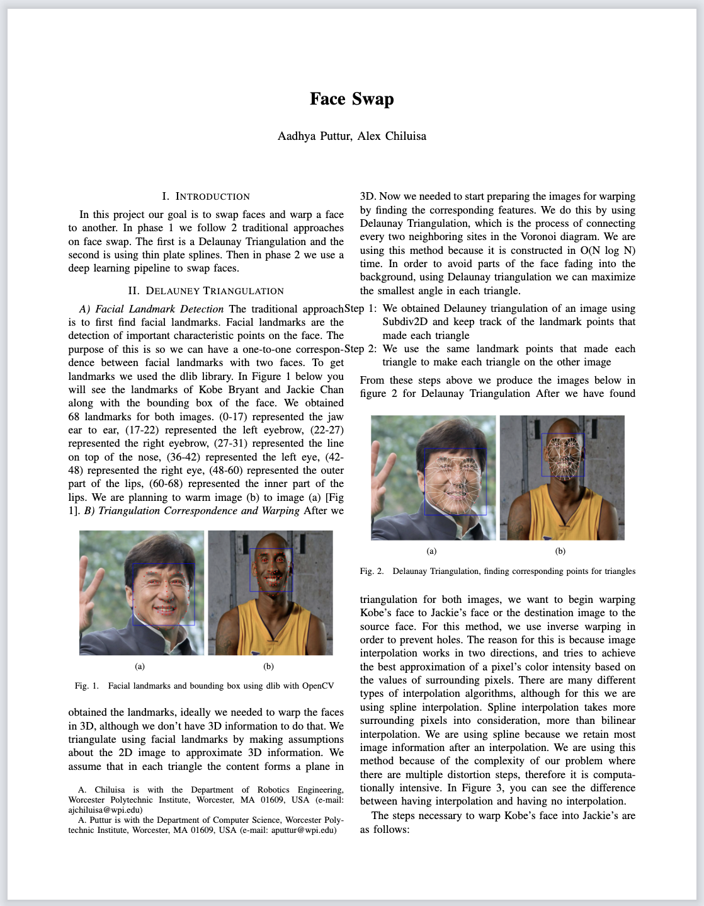
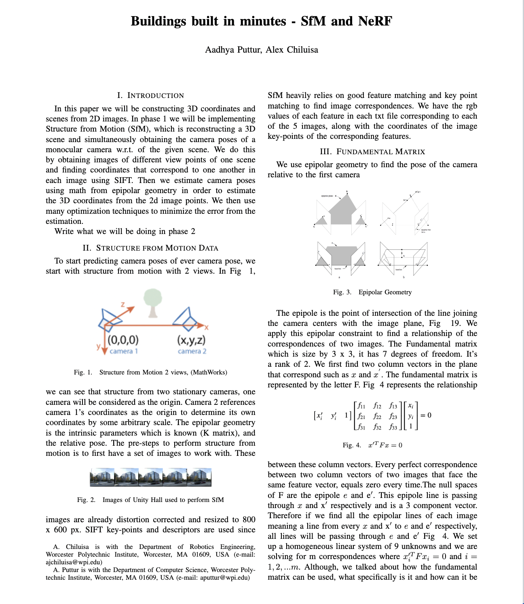
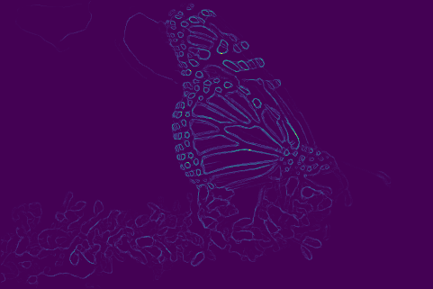

Hi I'm Aadhya
I am a creator
I have a very strong technical background as well as product ownership experience
I've developed software at Anduril, Skydio, MIT Lincoln Laboratories, and Raytheon

The development of a quadruped robot named Solo 12, which will be integrated to switch seamlessly between quadrupedal and bipedal modes of locomotion. I lead the development of the use of computer vision technology for person tracking.
C++
Linux

I led the development of a full-stack Java application prototype as part of a 10 person, Agile Scrum team. We created a java application for employees of Mass General Brigham HospitalMy key contributions were leading the software team, designing the backend, designing the UI
Java
Apache
JavaFX
Agile
Figma

I implemented the coffee can radar for the MIT Lincoln Labs Radar Course to work with the Arduino MKRZero, reducing communication speeds of radar by 20 ms.
MATLAB
Radar
Serial Communication
Arduino
oscilloscope

Won 2nd Place at Worcester Polytechnic Institute’s COVID Innovation Challenge. In 3 days we prototyped a PPE mask and I implemented an app which is useful for the user to keep track of their symptoms.
Google Maps API
Android Studios
Java
Prototype
Pitch Idea

I calculated the camera matrix parameters through utilizing different perspectives of images of checkerboards to obtain extrinsic parameters to calculate intrinsic parameters. I optimized camera parameters by reducing re-projection error by 11%
SciPy
Python
epipolar
numpy

Successfully created Face Swap in real time through the utilizing state of the art face-warping methods such as Triangulation and Thin Plate Spline
Python
Triangulation
opencv

I used the classical Structure From Motion technique to find poses of different views of a camera. I constructed scenes through volumetric representation using images from different angles by implementing NeRF.
Pytorch
Python
Neural Network

I Implemented PB boundary detection algorithm by creating image processing tools: texton, color, and brightness map. I trained and tested a Neural Network in Pytorch to compare sobel and canny edge detection algorithm.
Pytorch
Python
Neural Network
Image Processing
Gaussian